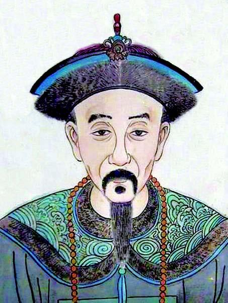
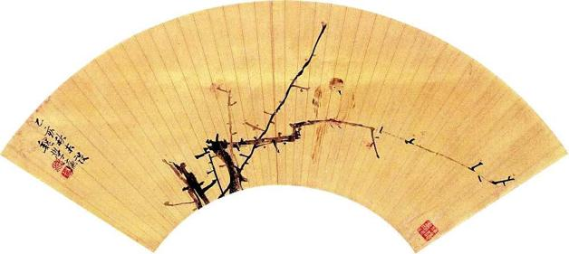

二
如杨士聪所说，在南方，“北来诸臣”背负了沉重压力，身陷白眼之中。这处境，固然源自一种极端化的伦理道德话语（后面我们再具体讨论），但也要看到，北京陷落后发生的许多事，对明末的精英阶层构成很大打击，使他们倍感颜面扫地，难对世人。
《甲申朝事小纪》开列了投降李闯的明朝官员详细名单，具其姓名及所授官职。那是一份相当长的名单，我逐个数下来，总计一百四十五人。其中分三种情形：迎降拥戴者、接受大顺委任者、得录用而未授职者。[8]《平寇志》也写到大致相同的情形和数目，只是未曾具体列出每人姓名。[9]
北京落于李自成之手后，投降确实成风。《明季北略》“内臣献太子”条记：三月二十日，也即城陷第二天，李自成从太监处搜得藏匿的崇祯诸子，太子与李自成交谈时先提了三点要求，然后又讲了这样一句：“文武百官最无义，明日必至朝贺。”果然，次日接受朝贺时，赶到者多达一千三百余人。“自成叹曰：‘此辈不义如此，天下安得不乱！’于是始动杀戮之念。”[10]又一条记道，二十三日投顺者点名，发现几个已经“削发”（出家免祸）的官员赫然在列，乃“令人尽拔其余毛，詈云：‘既已披剃，何又报名？’”李自成对刘宗敏、李过、牛金星等说：“各官于城破日，能死便是忠臣。若身体发肤受之父母，不敢毁伤，削发之人，不忠不孝，留他怎的？”[11]作为胜利者，出于自身利益，李自成确实需要从旧朝官吏中录用一些人，为其服务。但他对于厚颜如此的降附者，反感远多于欣赏。《平寇志》叙述首辅魏藻德晋见时情形：

洪承畴像。
洪承畴，崇祯十二年任蓟辽总督，领兵关外。崇祯十五年，于松山战败被俘，寻降于清，是最早降清的明朝重臣。松山失利闻于北京，君臣咸谓洪承畴必死，崇祯皇帝为之辍朝三日。
横波夫人顾媚。
顾媚，明末南京名妓，“秦淮八艳”之一。嫁龚鼎孳为妾，于崇祯十六年秋到北京。闯军破城后，龚鼎孳因她而有名言“我原要死，小妾不肯”。

魏学濂花鸟扇面。
魏学濂，忠烈之后，声气名士。北京失陷，未等消息传来，里人已先为之预设殉死结局，不料相反，一时群情汹然。
首呼魏藻德，叩首膝行前。自成起旁揖之，诘曰：“若受特恩，为何不死？”藻德哭曰：“方求效用，那可死？”自成、金星皆笑。藻德叩首求试，自成挥起之。[12]
李自成的态度，根本是奚落、戏弄与蔑视。
李自成规定，三月二十一日为百官朝贺日，如打算归顺，于这一天“投职名”报到。《明季北略》说：
百官报名者甚众，以拥挤故，被守门长班用棍打逐。早起，承天门不开，露坐以俟，贼卒竞辱之，竟日无食。有云：“肚虽饥饿，心甚安乐。”[13]
闯军刚刚入城，众官惧朝服冠带惹祸，纷纷销毁。到三月二十日，得到令百官投职名的消息，又后悔莫甚，仓猝间争相前往戏班子抢购戏服，致一顶戏冠之价陡至三四两银子。这样，第二天才得以“各穿本等吉服入朝”。其中有个杨枝起[14]，得到赴部授职通知，行前对家人眉飞色舞道：“我明日此时便非凡人矣。”他因此得外号“不凡人”。杨枝起的表现，并非个别。“新授伪官皆绣衣，红刺谒客，交错于途。”[15]扬眉吐气、奔走相告，至为京城一景。
倘以上列诸事，述者或系转抄，非得之亲见，那么我们来看一位目击者的记叙。复社名流、无锡监生顾杲，当时正在北京。他在《一席记闻》中，从一个无锡人的身份，写了四位同籍者的表现，并特别声明所写为“予之目见耳闻者数事”。此四人，一是兵部职方司主事秦汧，最后那段日子里，他受守城之命，三月十八日九城俱陷时，正在城上，忽见李自成在众降官“导迎”下走来，其中还有一位与之同年的朋友。秦汧当即跪地，报上官职，口称“恭迎圣驾”，却没人搭理他。“汧又高声大喊。时兵马之声，如风雨骤至，汧虽高声大喊，贼终不问。”另一位无锡人，秦汧的姑父、翰林学士赵玉森，三月二十日赶到礼部主事王孙蕙寓所：
涕泗交零，曰：“予受知崇祯固深，然国破家亡，实其自作之孽。予将捐性命以殉之，理既不然，将逃富贵以酬之，情亦不堪，奈何？”孙蕙曰：“方今开国之初，吾辈当争先着。”玉森曰：“甚合吾意。”遂同诣贼报名。
他们在报名处，遇见第四位无锡人，礼部主事张琦：
遇张琦拱手而不言，琦曰：“无弃故人，老夫尚可扬尘舞蹈。”因与俱焉。
正走着，忽然看见前方秦汧的背影：
急呼与语。汧曰：“吾决计已久，虑无同志，得诸公共事，宦途不患无帮手，况赵姑夫尤休戚相关者乎。”握手大笑，扬扬而前，不复楚囚相向矣。
故事还没完。“既至，孙蕙独有所奏，三人皆愕然。”原来王孙蕙棋高一招，预先备好表文，且保密，以防仿效。赵、秦二人不免心有恼恨，多亏张琦劝道：“勿以小嫌而伤同气。”“由是赵、秦皆不言。”[16]
为求证顾杲这段记叙得之亲见，而非耳食，笔者做了些许考据。顾杲自述其城陷后经历：“城外无可藏身，贼初入城，尚不妄杀，予因得俯仰于其间，更伺吾邑之列士大夫者。”亦即，借居在某位无锡籍官绅家中。起初，我曾设想这位无锡籍官绅或许就是王孙蕙，却又觉情理上不通，遂予放弃而另行搜求。后来，终于在《平寇志》里发现一条线索：
及都城隐，孙蕙偕同里秦汧、赵玉森、张琦等至马世奇寓，谋谒贼，世奇不可。[17]
进而又从《明季北略》看到：“公弱冠，即受知顾端文公”[18]，至此豁然得解。马世奇，崇祯四年进士，时任左庶子。他不但同为无锡人，关键在于他是顾杲祖父顾宪成的门生；“端文”，即顾宪成死后谥号。以这层关系，顾杲城陷后“俯仰于其间”之地，当为马府无疑。换言之，三月二十日，顾杲在马家亲见王孙蕙一行前来动员马世奇参加他们的投降行动，而遭拒绝。至于马世奇，他在拒绝投降后次日自缢身亡，后来受到弘光朝廷的表彰，得谥“文忠”。
顺便说一下，王孙蕙对于藏在袖中的那篇奏章，很下了一番功夫，可谓得意之作。中有佳句：“燕北既归，宜拱河山而受箓；江南一下，当罗子女以承恩。”一时盛传。宋企郊传达了李自成的评价：“主上以公表及周庶常草诏，可作新朝双璧。”[19]“周庶常”指周钟，其《劝进表》也写出了漂亮的颂词，稍后我们可以欣赏。
三月二十三日，崇祯遗体收殓入棺，陈放于东华门某庵，命明朝官员前来告别。文秉《烈皇小识》述其场景：
诸臣哭拜者三十人，拜而不哭者六十人，余皆睥睨过之。[20]
“哭拜”，表示对死者仍守君臣之分；“拜而不哭”，则是既不愿落得忘恩负义的骂名，又忌惮开罪新统治者、引火烧身；至于“睥睨过之”，当然是清楚地表示与旧主一刀两断。第一种人仅三十位，第二种六十位，而第三种多到不必计数，以“余皆”二字括之。我们难以确切说出明朝京官总数。从《宪宗实录》中看到，成化二十三年七月乙卯，亦即朱棣忌辰那一天，于奉先殿举祭，点名后发现“文武官不至者一千一百一十八员”。[21]前面所引《明季北略》，也称三月二十一日在承天门投顺的人数，有一千三百多；而“廿三辛亥诸臣点名”一条，又有“百官囚服立午门外，约四千余人”[22]之句。可见明朝京官是个相当庞大的群体。他们当中，只有三十人做到仍然效忠崇祯皇帝，六十人愿意承认曾经是崇祯皇帝的臣属，余下的，全部“睥睨过之”了。
这比例有些惊人。